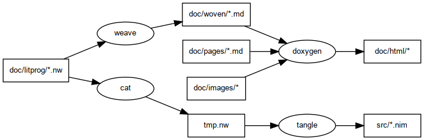

Thanks to https://github.com/smartell/APIDemo for showing the way.
1. Initial Setup
blah
git clone https://github.com/colinc904/wangle.git
mkdir -p doc/html
echo 'doc/html/' >>.gitignore
cd doc/html
git clone https://github.com/colinc904/wangle.git
git checkout origin/gh-pages -b gh-pages
git branch -d master
2. Committing Changes
blah
gc
git push origin master
cd doc/html
ga .
gc
git push origin gh-pages
3. Cloning the Repo
blah
git clone https://github.com/colinc904/wangle.git
cd doc/html
git clone https://github.com/colinc904/wangle.git
git checkout gh-pages
Dataflow
